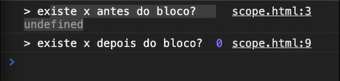

JavaScript
O que é

Javascript é uma das linguagens de programação mais populares do mundo e possuí uma diversidade gigantesca de aplicação, porém fortemente utilizado no Front-End a parte visual do site. Sua popularidade vem do fato dela ser uma linguagem extremamente flexível e multifacetada, fzendo com que milhares de pessoas desenvolvedoras se interessassem por ela, inclusive para escrever os primeiros códigos.
Tipos de dados
- Number: Dado de tipo numérico "1, 2, 10";
- String: Dado de tipo alfanumérico "peixe, bola, gato";
- Boolean: Dado de tipo verdadeiro ou falso "true or false";
- Array: Também conhecido como vetor, nele podem ser guardados vários dados e depois recupera-los para uso posterior "["peixe", "bola", "gato"]";
-
Object: Nele serão guardados dados como pessoas,
animais com suas determinadas caracteristicas "
{nome: "João",
idade: 28,
peso: 48}
Fracamente tipado.
JavaScript é uma linguagem fracamente tipada, ou seja, quando vamos declarar uma variável não precisamos especificar o tipo de dado que a mesma irá receber, a própria linguagem atribuirá o tipo de dado quando dermos um valor a variável, por exemplo:
let i;
i = 1
Neste caso a minha variável "i" será do tipo number (número), e é dessa forma que serão declaradas as variáveis.
JavaScript Funções próprias
O JavaScript já possuí várias funções próprias, por exemplo quando declaramos uma string (alfanumérico) a mesma já possuí uma série de informações que podem ser utilizadas, tais como, quantidade de letras, posições em array, etc...
Declarando variável e constante
Para declaração utilizamos 3 principais comandos: Var, Let e Const
- var: Declara uma variável porém tem um uso um tanto quanto restrito por não ter escopo, então é complicada de controlar, ainda mais quando se é iniciante, por exemplo:
console.log("existe x antes do bloco?" + x);
var x = 0;
console.log("existe x depois do bloco?" + x);
O que se espera é que ocorra um erro pois var não foi declarado antes do primeiro comando para impressão na tela, porém o resultado é

O que acontece é que nosso var sobe no código por debaixo dos panos
como se fosse:
var x;
console.log("existe x antes do bloco?" + x);
x=0;
console.log("existe x depois do bloco?" + x);
Let e Const
Quando vamos declarar uma variável, utilizamos let como vimos no exemplo anterior var não possuí escopo, já let possuí, portanto se usassemos o mesmo exemplo de var usando let, teriamos um erro já que let segue o escopo e até o momento do primeiro console.log() não teria sido declarado. const é utilizado para declarar uma variável.
Imprimindo mensagens na tela
Para imprimir usamos o comando console.log() um exemplo é a classica primeira mensagem que todo programador tenta utilizar na primeira vez em uma linguagem, o "Hello World" que no JavaScript fica console.log("Hello World").
Laços de repetição
Nos laços de repetição a sintaxe mais comum que você verá será
for, por exemplo:
}
Onde "i" é o seu contador e "x" será um número, por exemplo se eu quiser que o laço se repita 10 vezes, se escreve "i<=10" onde enquanto o contador "i" for menor que 10 o laço irá continuar e apartir do momento que o contador atingir 10 ou seja sair de verdadeiro para falso, o laço irá encerrar.